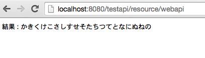

JavaでMySQLを操作するWebAPIを作る(2)
唐突ですが、、、
目標
- Java製のWebAPIでMySQL
- mavenでビルドとか色々管理する
- JavascriptでWebAPIを呼び出す
今回の目標
- DBドライバーを導入して、select SQLを実行する！
今日やったこと
- JDBCの準備
- インストール
- ロード
- MySQLの準備
- mysqlの準備
- API実装
- apiからDBのselectの結果を取得
JDBC準備
- インストール
mavenから行うので、pom.xmlに以下を追加します。
1 | <dependency> <groupId>mysql</groupId> <artifactId>mysql-connector-java</artifactId> <version>5.1.6</version> </dependency> |
MySQLの準備
test databseに適当な値を入力しておきます
- database
testを使います。
1 | show databases; +--------------------+ | Database | +--------------------+ | information_schema | | test | +--------------------+ 2 rows in set (0.01 sec) |
- table作成
1 | mysql> create table testTable (column1 int, column2 varchar(20)); Query OK, 0 rows affected (0.04 sec) mysql> show tables from test; +----------------+ | Tables_in_test | +----------------+ | testTable | +----------------+ 1 row in set (0.00 sec) |
- データ追加
APIで取得するための適当な値を入力しておきます。
1 | insert into test.testTable values (1, "あいうえお"), (2, "かきくけこ"); |
- データ取得
今回取得対象のtableはこんな感じ
1 | mysql> select * from test.testTable; +---------+--------------------------------------------------------------+ | column1 | column2 | +---------+--------------------------------------------------------------+ | 1 | あいうえお | | 2 | かきくけこ | | 1 | あいうえお | | 2 | かきくけこ | | 1 | あいうえお | | 2 | かきくけこさしすせそたちつてと | | 1 | あいうえお | | 2 | かきくけこさしすせそたちつてとなにぬねの | | 1 | あいうえお | | 2 | 12345678901234567890 | +---------+--------------------------------------------------------------+ 10 rows in set (0.00 sec) |
- 列数を取得
1 | mysql> select count(*) from test.testTable; +----------+ | count(*) | +----------+ | 10 | +----------+ 1 row in set (0.00 sec) |
API実装
- WebAPIでデータ取得
1 | package net.sokontokoro_factory.webapi; import javax.ws.rs.GET; import javax.ws.rs.Path; import javax.ws.rs.Produces; import javax.ws.rs.core.MediaType; import java.io.*; import java.sql.*; @Path("/resource") public class SampleResource { @Path("/webapi") @GET @Produces(MediaType.TEXT_PLAIN + "; charset=UTF-8") public String getItem() { Connection conn = null; String url = "jdbc:mysql://localhost/test"; String user = ""; String password = ""; String msg; String[] items = {}; int count = 0; try { /*DB setup*/ Class.forName("com.mysql.jdbc.Driver").newInstance(); conn = DriverManager.getConnection(url, user, password); Statement stmt = conn.createStatement(); /*tableの列数を取得*/ ResultSet rs = stmt.executeQuery("select count(*) from test.testTable"); rs.next(); count = rs.getInt(1); /*column2の要素を全件取得*/ items = new String[count]; rs = stmt.executeQuery("select * from test.testTable"); int i = 0; while(rs.next()){ items[i] = rs.getString("column2"); i ++; } /*DB close*/ rs.close(); stmt.close(); }catch (ClassNotFoundException e){ msg = "ClassNotFoundException:" + e.getMessage(); }catch (SQLException e){ msg = "SQLException:" + e.getMessage(); }catch (Exception e){ msg = "Exception:" + e.getMessage(); }finally{ try{ if (conn != null){ conn.close(); msg = "データベース切断に成功しました"; }else{ msg = "コネクションがありません"; } }catch (SQLException e){ msg = "SQLException:" + e.getMessage(); } } return "結果 : " + items[7]; } } |
いいかんじ！
